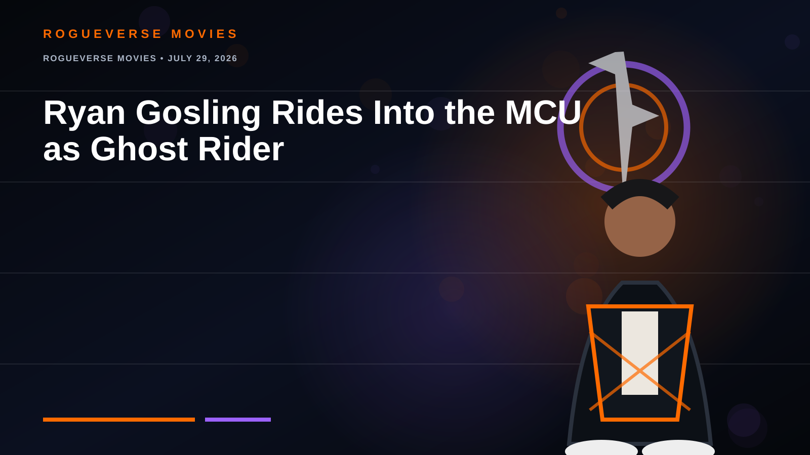

ROGUEVERSE MOVIES • JULY 29, 2026
Ryan Gosling Rides Into the MCU as Ghost Rider
Years of fan-casting are over: Marvel handed Gosling the keys to its supernatural motorcycle.

Marvel Studios announced at San Diego Comic-Con that Ryan Gosling will star as Ghost Rider in a standalone MCU film directed by Shawn Levy, planned for 2028.
The casting opens the door to the MCU’s darker supernatural side. The real test is tone: Ghost Rider needs horror, tragedy and road-movie grit—not just a flaming-skull cameo followed by jokes.
RogueVerse verdict
Gosling can play quiet damage, strange humor and explosive intensity. If Marvel lets the movie be genuinely haunted, this could be one of its sharpest pivots in years.
Status: officially announced by Marvel Studios at Comic-Con 2026.
← RogueVerse Movies